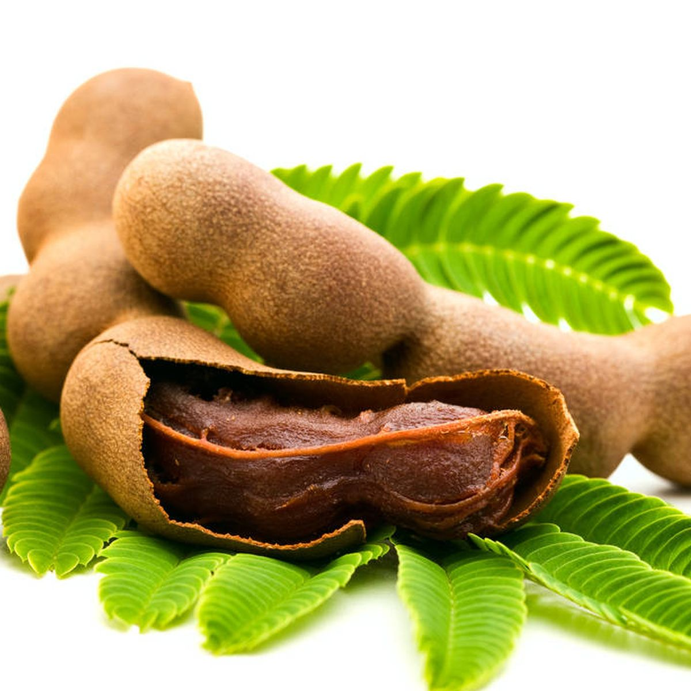

Sabores - Gastronomia y Tradicion
Saberes - Conocimiento Cientifico y Ancestral
Salud - Alimentacion y Bienestar
El tamarindo es un árbol tradicional en los patios y caminos rurales de Córdoba, valorado tanto por su sombra como por su fruto ácido, ampliamente utilizado en la gastronomía y en remedios caseros de la región.
Es un árbol de gran tamaño, copa frondosa y hojas compuestas de pequeños folíolos. Su fruto es una vaina alargada de cáscara quebradiza, que contiene en su interior una pulpa fibrosa, ácida y densa, rodeando semillas duras de color oscuro.
Se adapta bien a climas cálidos y secos, tolerando suelos pobres y periodos prolongados de sequía. Prefiere terrenos bien drenados y buena exposición solar, características comunes en varias zonas rurales de Córdoba.
Con el tamarindo se preparan jugos, dulces en bola, mermeladas y bebidas refrescantes muy apreciadas en épocas de calor. También se usa tradicionalmente en remedios caseros para aliviar malestares digestivos.
Se encuentra distribuido en patios, fincas y caminos rurales de distintos municipios de Córdoba, siendo un árbol común en el paisaje campesino del departamento.
El tamarindo aporta fibra, vitamina C y minerales como el potasio y el magnesio, además de contener antioxidantes naturales presentes en su pulpa ácida.
La cosecha del tamarindo suele concentrarse en los primeros meses del año, coincidiendo con la temporada seca, cuando las vainas alcanzan su madurez completa.
Su comercialización, ya sea en fruto fresco, pulpa o dulces artesanales, representa una fuente adicional de ingresos para familias campesinas durante su temporada de cosecha.
El tamarindo favorece la digestión gracias a su contenido de fibra, y sus antioxidantes naturales contribuyen a la protección celular, además de ser tradicionalmente usado como remedio natural para el malestar estomacal.
El tamarindo forma parte de los saberes populares de la región, siendo un remedio casero habitual y un ingrediente presente en dulces tradicionales que se preparan y comparten en el ámbito familiar y comunitario.